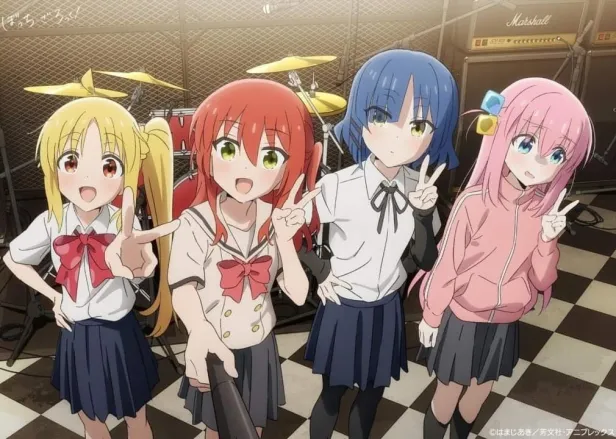
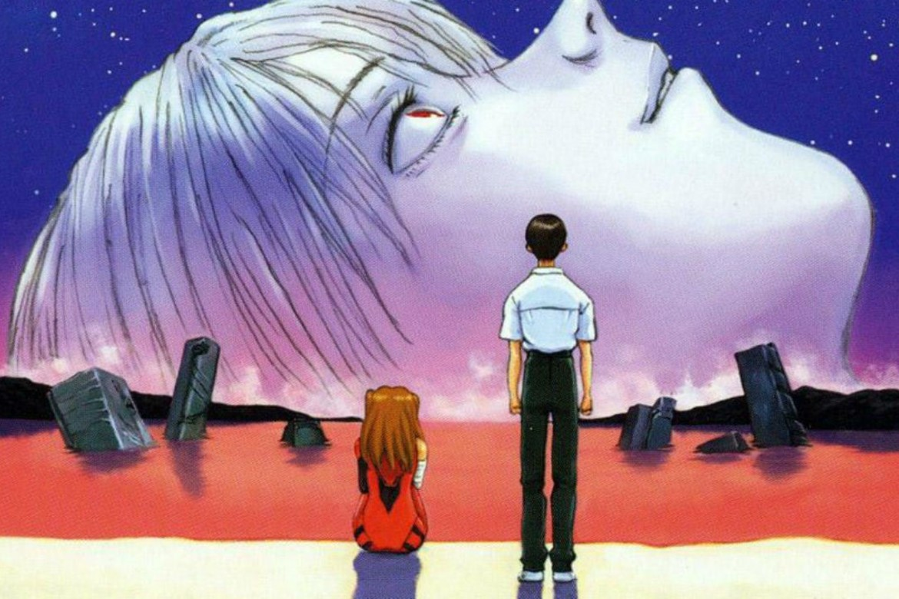

13 de maio de 2023
Bocchi the Rock!

Yearning to make friends and perform live with a band, lonely and socially anxious Hitori "Bocchi" Gotou devotes her
time to playing the guitar. On a fateful day, Bocchi meets the outgoing drummer Nijika Ijichi, who invites her to join
Kessoku Band when their guitarist, Ikuyo Kita, flees before their first show. Soon after, Bocchi meets her final
bandmate—the cool bassist Ryou Yamada.
Although their first performance together is subpar, the girls feel empowered by their shared love for music, and they
are soon rejoined by Kita. Finding happiness in performing, Bocchi and her bandmates put their hearts into improving as
musicians while making the most of their fleeting high school days.
15 de março de 2023
Neon Genesis Evangelion: The End of Evangelion

Shinji Ikari is left emotionally comatose after the death of a dear friend. With his son mentally unable to pilot the
humanoid robot Evangelion Unit-01, Gendou Ikari's NERV races against the shadow organization SEELE to see who can enact
their ultimate plan first. SEELE desires to create a godlike being by fusing their own souls into an Evangelion unit,
while Gendou wishes to revert all of humanity into one primordial being so that he can be reunited with Yui, his
deceased wife.
SEELE unleashes its military forces in a lethal invasion of NERV headquarters. As SEELE's forces cut down NERV's
scientists and security personnel, Asuka Langley Souryuu pilots Evangelion Unit-02 in a desperate last stand against
SEELE's heaviest weaponry.
The battle rages on, and a depressed Shinji hides deep within NERV's headquarters. With the fate of the world resting in
Shinji's hands, Captain Misato Katsuragi hunts for the teenage boy as society crumbles around them.